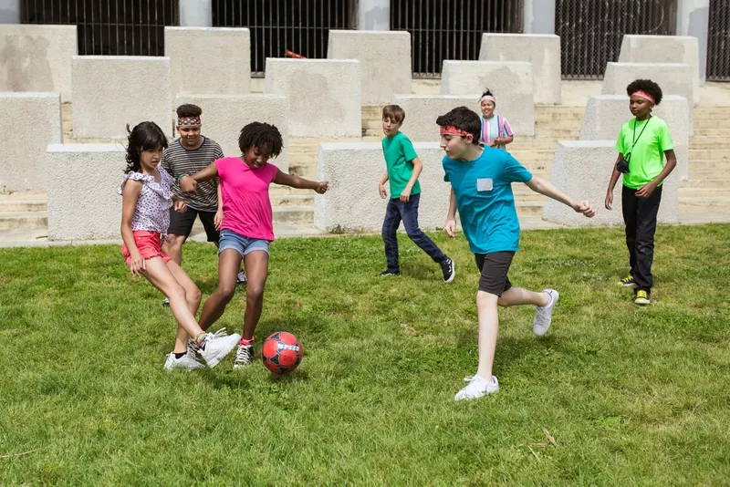
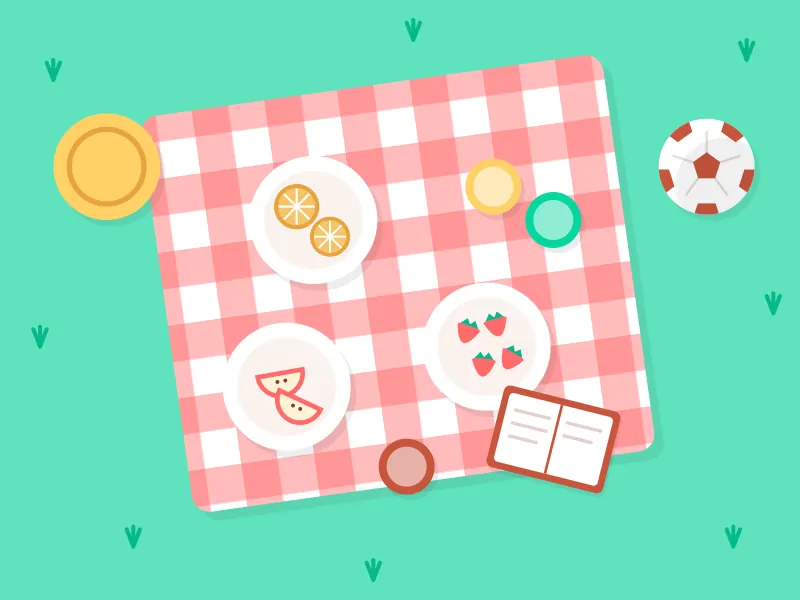

Oprechte aandacht voor ieder kind
Ieder kind is anders, en dat vinden wij juist mooi. We nemen de tijd om te luisteren, kijken echt naar wat je kind nodig heeft en vieren samen elke kleine en grote overwinning.

Buitenschoolse opvang in Amsterdam
Hé, wat leuk dat je er bent! Na school is het bij ons tijd om te rennen, te spelen en lekker bij te kletsen. Jij hebt je handen vrij, wij zorgen voor een middag waar je kind blij van wordt.
Waarom Sporty?
Een BSO kies je niet zomaar. Dit is waar wij het verschil maken voor jouw kind.
Ieder kind is anders, en dat vinden wij juist mooi. We nemen de tijd om te luisteren, kijken echt naar wat je kind nodig heeft en vieren samen elke kleine en grote overwinning.
Rennen, springen, balspellen en buiten ravotten: bij ons zit niemand de hele middag stil. We stimuleren kinderen om lekker te bewegen, op hun eigen niveau en vooral met veel plezier.
Na een lange schooldag wil je vooral even jezelf kunnen zijn. Met vertrouwde gezichten, vriendjes en een warme sfeer wordt de BSO een plek waar je kind graag naartoe gaat.

Wat we doen
Na schooltijd komt je kind naar een plek waar het zich thuis voelt. We sporten, spelen, ontspannen en hebben het vooral gezellig met elkaar. En jij? Jij werkt of regelt je zaken met een gerust hart.
Over ons
Wij zijn een buitenschoolse opvang in Amsterdam met een groot hart voor kinderen. Wij geloven dat de middag na school net zo belangrijk is als de ochtend in de klas: tijd om te bewegen, vriendschappen te sluiten en te groeien in je eigen tempo.
We zijn betrouwbaar, eerlijk en zorgzaam, en we houden van een beetje gekkigheid. Want lachen hoort er gewoon bij!
Samen sporten, samen groeien
Aanmelden doe je online, in een paar minuten. Daarna nemen we contact met je op voor een kennismaking. Neem je kind gerust mee: samen ontdekken is het leukst!
Eerst kennismaken? Kom gezellig langs
